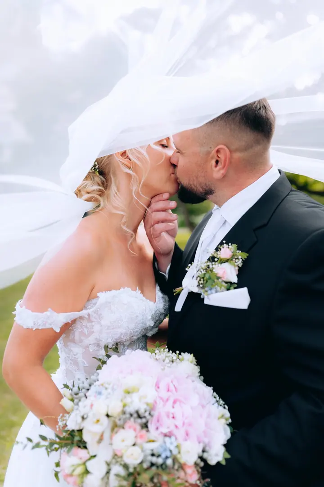
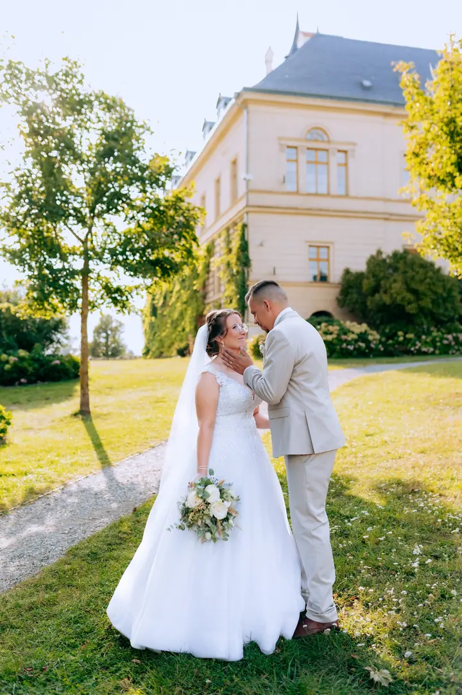
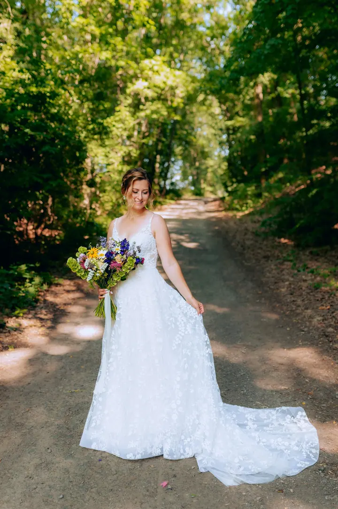
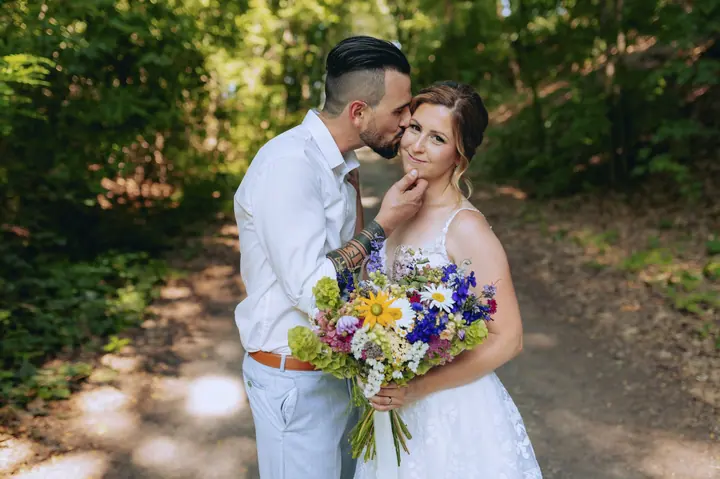
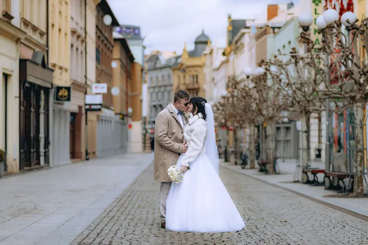

jedna
Svatební příběhy
Celý váš den od příprav nevěsty až po večerní zábavu, nebo kratší půldenní varianta. Ke svatebnímu balíčku patří předsvatební focení a 30 vyvolaných fotografií.

Svatební a rodinná fotografka · Opava, Moravskoslezský kraj

Jmenuji se Barbora Špičková a jsem svatební a rodinná fotografka z Opavy. Ze všeho nejraději fotím svatby, ale stejně ráda vyfotím páry i vaše rodinné chvíle. Mám nejraději, když jste sami sebou a já můžu zachytit vaše emoce, lásku, radost a štěstí.
Více o mně
Co fotím
jedna
Celý váš den od příprav nevěsty až po večerní zábavu, nebo kratší půldenní varianta. Ke svatebnímu balíčku patří předsvatební focení a 30 vyvolaných fotografií.
Společné focení, při kterém se lépe poznáme a zjistíte, že focení může být zábava. Fotky se hodí na svatební tiskoviny nebo jen tak na památku.
Fotím miminka v pohodlí vašeho domova v lifestyle stylu i přímo v porodnici. Žádné aranžování, jen vaše první společné dny.
Velké i malé radosti vaší rodiny v exteriéru, doma nebo v ateliéru. Ráda vás vyfotím i v očekávání miminka.

Zachycuji lásku, emoce a vaše momenty štěstí

Za objektivem
Už od malička jsem se věnovala umění, ráda jsem kreslila, malovala a tvořila. Postupně mě čím dál víc lákala fotografie. Začínala jsem s kompaktem a vypůjčenou zrcadlovkou, pak jsem si našetřila na vlastní. Z focení rostlin a zvířat se stalo focení lidí, a nakonec rodin a svateb.
Fotografování máme trochu v rodině. Můj děda byl vášnivý fotograf, fotil svou rodinu i svatby a fotky si sám vyvolával doma v koupelně. Když za ním přijedu, skoro vždycky vytáhne fotky ze svého života a já se ráda dívám na jeho radostný výraz, když o nich mluví.
Proto ze všeho nejraději fotím svatby. Prožívám s vámi váš příběh a tvořím vzpomínky, ke kterým se budete rádi vracet znovu a znovu. A protože mám vždycky úsměv na rtech, věřím, že vás focení se mnou bude i bavit.
Barbora
Ozvěte se přes formulář nebo e-mail a ověříme volný termín. Rezervaci potvrdíte zálohou.
Ráda se s vámi před svatbou potkám osobně, doladíme detaily a probereme harmonogram. Schůzku můžeme spojit s předsvatebním focením.
Jsem s vámi od příprav nevěsty až po večerní zábavu, nebo podle zvoleného balíčku. Vy si užíváte, já zachycuji emoce.
Upravené fotografie dostanete v elektronické galerii a k tomu vyvolané fotografie 13×18 v dárkové krabičce.
Portfolio
Otázky
Počet není omezený. U celodenního balíčku projdou úpravou všechny povedené fotografie, minimálně jich bude 600.
U celodenního balíčku ano, dostanete z něj 25 fotografií barevně i černobíle. K půldennímu balíčku ho nabízím se slevou 50 %.
Neupravené fotografie neposkytuji. Ke každé fotce, kterou dostanete, se můžete s klidem hlásit.
Ano, ráda za vámi přijedu. Doprava nad 30 km od místa mého bydliště se účtuje 5 Kč za kilometr.
Napište pár vět o tom, co si představujete. · +420 604 722 966